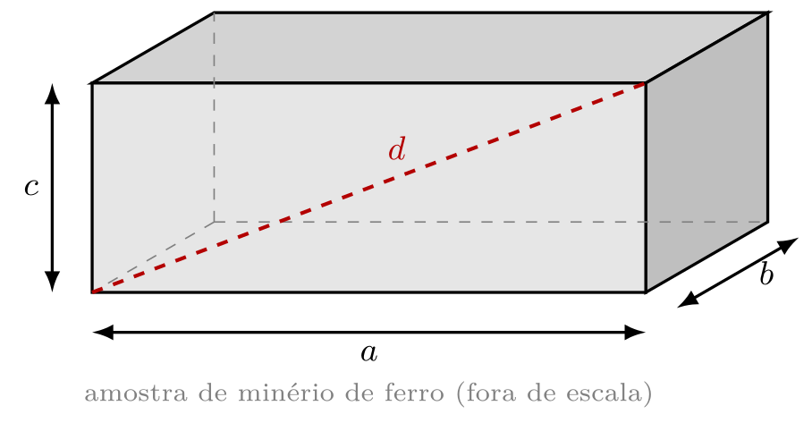

Identificação
Nome:
Registro Acadêmico (RA):
Data: ______/______/_______
Curso:
Professor:
Encontro:
Estude escrevendo à mão , ouvindo música instrumental.
Pierluigi Piazzi, em Aprendendo Inteligência
Hoje o π vira medida. Numa simulação, você mede o diâmetro D e o comprimento C de seis
circunferências com duas réguas: uma só com centímetros, outra com milímetros. O modelo diz
C = π D . A pergunta desta folha é quantos algarismos de π cada régua consegue sustentar.
A teoria dos algarismos significativos está no Texto Temático (TT): consulte-o se travar.
https://www.laboratoriovirtual.fisica.ufc.br/algarismos-significativos-1
Abra o link ou o QR code, no computador ou no celular deitado.
As circunferências vão da menor (1, violeta ) à maior (6, vermelha ):
violeta · azul · verde · amarela · laranja · vermelha.
Para o diâmetro , clique em Régua centimetrada (Procedimento 1) ou Régua milimetrada
(Procedimento 2) e arraste a régua sobre a circunferência.
Para o comprimento , arraste até o fim o controle Abrir circunferências : cada uma vira um
segmento reto, que você mede com a mesma régua.
Simulação e roteiro de origem: Laboratório Virtual de Física da UFC, Algarismos
Significativos 1 (G. S. Castro e N. L. Dias). Adaptado para a LME.
Procedimento 1 — régua graduada em centímetros
A régua não tem os milímetros: cada medida tem só
1 casa decimal — o algarismo que você estima entre duas marcas. Calcule C/D com o número correto
de algarismos significativos.
Tabela 3 — medidas com a régua graduada em cm (anote em cm, com 1 casa decimal)
# Circunferência Diâmetro D (cm) Comprimento C (cm) C / D
1 violeta 2 azul 3 verde 4 amarela 5 laranja 6 vermelha
Laboratório de Mecânica (LME) · T0E · Folha de Atividades v1 ·
IFMG — Campus Ouro Preto · NIDEC/CODAFIS · página 1 de 4
Gráfico 1 — C × D com a régua em centímetros
Escolha as escalas para que os pontos ocupem a maior parte da
grade, escreva os valores nos eixos e marque os seis pontos da Tabela 3. Não ligue os pontos.
Procedimento 2 — régua graduada em milímetros
Agora a régua tem os milímetros: anote em centímetros, com
2 casas decimais . Calcule C/D com o número correto de algarismos significativos.
Tabela 4 — medidas com a régua graduada em mm (anote em cm, com 2 casas decimais)
# Circunferência Diâmetro D (cm) Comprimento C (cm) C / D
1 violeta 2 azul 3 verde 4 amarela 5 laranja 6 vermelha
Laboratório de Mecânica (LME) · T0E · Folha de Atividades v1 ·
IFMG — Campus Ouro Preto · NIDEC/CODAFIS · página 2 de 4
Gráfico 2 — C × D com a régua em milímetros
Mesmas regras do Gráfico 1, com os pontos da Tabela 4.
Questões 1 e 2 — a área dos círculos
Calcule A = π D²/4 dos círculos 1, 3 e 5 com o número correto
de algarismos significativos. Anote o valor de π exatamente como usou na conta.
1. Dados da Tabela 3
Tabela 5 — círculos 1, 3 e 5 (dados da Tabela 3)
Círculo 1 3 5
D (cm) π usado A (cm²)
2. Dados da Tabela 4
Tabela 6 — círculos 1, 3 e 5 (dados da Tabela 4)
Círculo 1 3 5
D (cm) π usado A (cm²)
Questão 3 — leia os comprimentos
Escreva cada leitura com o número correto de algarismos
significativos: os corretos e mais um, o duvidoso. Atenção: nem toda peça começa no zero.
Laboratório de Mecânica (LME) · T0E · Folha de Atividades v1 ·
IFMG — Campus Ouro Preto · NIDEC/CODAFIS · página 3 de 4
Questão 4 — o resultado com o número correto de algarismos significativos
Operação Resultado da calculadora
Com o número correto de algarismos significativos
31,46 m + 8,7 m = 40,16 m 52,8 cm − 17,35 cm = 35,45 cm 3,47 m × 1,2 m × 2,068 m = 8,611152 m³ (18,62 m ÷ 4,35 s) × 2,7 s = 11,55724138 m
Questão 5 — a amostra de minério

Uma amostra de minério de ferro tem a forma de um paralelepípedo, com
a = 12,48 cm, b = 6,35 cm e c = 4,72 cm. Responda com o número correto de algarismos significativos.
(a) A diagonal d da face ac:
(b) A área total das faces:
Questão 6 — o rolete da correia transportadora
O diâmetro de um rolete é D = 88,93 mm. Calcule a área da
seção transversal, A = π R², com π de 3 a 7 algarismos. Anote todos os algarismos da calculadora
e veja a partir de qual π o 4.º algarismo de A deixa de mudar.
π R² (mm²) A (mm²)
3,14 3,142 3,1416 3,14159 3,141593
Resposta com o número correto de algarismos significativos:
Questão 7 — quantos algarismos de π?
Com quantos algarismos significativos devemos usar o π para que a área da Questão 6
saia com quatro algarismos significativos, na Física Experimental? Justifique com a sua tabela.
Terminamos por aqui, um abraço, e até o próximo encontro.
Traga esta folha impressa e preenchida ao encontro de 03/11/2026 (E6).
Na bancada, o mesmo C × D sai de objetos de verdade.
IFMG campus Ouro Preto - Coordenadoria da Área de Física (CODAFIS) - Núcleo de Inovação e Desenvolvimento de Experimentos Científicos (NIDEC) · Primeira edição · 2026
Laboratório de Mecânica (LME) · T0E · Folha de Atividades v1 ·
IFMG — Campus Ouro Preto · NIDEC/CODAFIS · página 4 de 4
Site
Método
Documentos
Música
Ineditismo
Créditos
Método
Prisma decompondo a luz — Licenciatura em Física
A ordem não é burocracia: ela segue como o cérebro aprende — preparação (pergunta antes da resposta), construção ativa (recuperar em vez de reler) e consolidação (revisão no mesmo dia e revisões espaçadas, com o sono fazendo a parte dele).
Pré-Lab · fazer em casa, antes da aula de bancada
Preparar o experimento antes de tocar no equipamento: chegar à bancada sabendo o que será medido, com qual instrumento e com quais cuidados.
Ponto de Partida (PP) — vale nota · antes do Lab · 10 min Resumo em Áudio (MD) — ouvir · curto (5 a 10 min) · padrão (15 a 25 min) Texto Temático (TT) — ler · a prática explicada Folha de Atividades (FA) — praticar · no aparelho ou impressa Simulações (SM) — explorar · simulações Testinho (TN) — vale nota · antes do Lab · 10 min
Materiais de apoio desta parada (sem número no caminho)
Cartões Didáticos (CD) — ler · revisão ativa Mapa Conceitual (MC) — ler · questões conceituais Inventário de Equipamento (IE) — o que vai na bancada Checklist de Segurança (CS) — obrigatório · antes da bancada
Lab · na bancada, com o professor · 100 min
Construir o conhecimento com as mãos: montar, medir e registrar — com o professor sustentando o passo que você ainda não dá sozinho.
Roteiro de Bancada (RB) — execução · registrar os dados Apresentação do Lab (AP) — roteiro dos 100 min · rever depois Infográficos de Bancada (IG) — painel e consultas · durante a prática Provinha (PR) — vale nota · fechamento do Lab
Pós-Lab · a partir do mesmo dia da prática
Transformar dados em conclusão. A memória não se fixa na bancada, e sim depois — em boa parte durante o sono.
Relatório Mínimo (RM) — vale nota · até 1 dia após o Lab · 1 página Relatório Completo (RC) — vale nota · até 6 dias após o Lab
Materiais de apoio desta parada (sem número no caminho)
Desafio Pedagógico (DX) — opcional · desafio
Não pule nenhum objeto de aprendizagem. Se pulou, volte. Cada passo prepara o terreno do seguinte: sem o Ponto de Partida a leitura não encontra pergunta; sem o Pré-Lab a bancada vira receita seguida às cegas — e aqui, onde o experimento é o próprio objeto de estudo, sem previsão não há o que pôr à prova; sem o Relatório Mínimo os dados esfriam antes de virar conclusão. Pular um objeto de aprendizagem não adianta a trilha — atrasa. Se você pulou, volte ao passo que ficou para trás e siga dali.
Documentos
Prisma decompondo a luz — Licenciatura em Física
Primeiro os documentos do curso, depois os desta disciplina e, por fim, as referências que sustentam este site. Cada documento tem PDF e QR próprios, para ler no celular. A legislação abre na página oficial do IFMG.
Projeto Pedagógico do Curso (PPC) · guia + PDF integral
Matriz Curricular · os oito períodos
Regulamento Disciplinar Discente · resumo + PDF oficial
Legislação e Normas de Ensino · página oficial do IFMG
Ementa · em vigor e proposta
Plano de Ensino 2026.2 · objetivos, método e avaliação
A proposta de nova ementa está em análise pela Coordenação do Curso; até a aprovação, vale a ementa em vigor.
Referências
Referências são as obras em que este site se apoia. A Básica e a Complementar trazem a análise de dados e a física da bancada. A Metodológica traz o método de estudo. Os documentos e as normas trazem as regras do curso. Elas valem para conferir uma ideia, ir mais fundo ou citar no seu relatório.
Bibliografia Básica
LIMA, C. R. A.; ZAPPA, F. Análise de dados para laboratório de física . Juiz de Fora: UFJF, 2014. 57 p. Disponível em: https://www2.ufjf.br/carlos_lima/wp-content/uploads/sites/520/2019/01/analisedados.pdf. Acesso em: 13 set. 2026.
CAMPOS, A. A.; ALVES, E. S.; SPEZIALI, N. L. Física experimental básica na universidade . 2. ed. Belo Horizonte: Editora UFMG, 2008.
SANTORO, A. et al. Estimativas e erros em experimentos de física . 2. ed. Rio de Janeiro: EdUERJ, 2013.
Bibliografia Complementar
VUOLO, J. H. Fundamentos da teoria de erros . 2. ed. São Paulo: Edgard Blücher, 1996.
UNIVERSIDADE FEDERAL DO CEARÁ. Laboratório virtual de física : mecânica. Fortaleza: UFC, 2020. Disponível em: https://www.laboratoriovirtual.fisica.ufc.br/. Acesso em: 13 set. 2026.
VAŠČÁK, V. Physics at school : I. Mechanics. Morávia: Vladimír Vaščák, [20--]. Disponível em: https://www.vascak.cz/?id=1&language=it#kapitola3. Acesso em: 13 set. 2026.
UNIVERSITY OF COLORADO BOULDER. PhET Interactive Simulations . Boulder: University of Colorado Boulder, 2002-. Disponível em: https://phet.colorado.edu/pt_BR/. Acesso em: 13 set. 2026.
Bibliografia Metodológica
BLOOM, Benjamin S. (org.). Taxonomia de objetivos educacionais : domínio cognitivo. Porto Alegre: Globo, 1972.
HEWITT, Paul G. Física conceitual . 12. ed. Porto Alegre: Bookman, 2015.
NICOLELIS, Miguel. O verdadeiro criador de tudo : como o cérebro humano esculpiu o universo como nós o conhecemos. São Paulo: Crítica, 2020.
PIAZZI, Pierluigi. Aprendendo inteligência . São Paulo: Aleph, 2008.
PIAZZI, Pierluigi. Inteligência em concursos . São Paulo: Aleph, 2014.
Documentos e normas
INSTITUTO FEDERAL DE MINAS GERAIS. Campus Ouro Preto. Legislação e normas de ensino . Ouro Preto: IFMG, [202-?]. Disponível em: https://ouropreto.ifmg.edu.br/ouropreto/ensino/legislacao-e-normas-de-ensino. Acesso em: 14 set. 2026.
INSTITUTO FEDERAL DE MINAS GERAIS. Campus Ouro Preto. Calendário acadêmico 2026 . Ouro Preto: IFMG, 2026. Disponível em: https://ouropreto.ifmg.edu.br/ouropreto/ensino/calendario-escolar/2026/. Acesso em: 14 set. 2026.
INSTITUTO FEDERAL DE MINAS GERAIS. Campus Ouro Preto. Curso de Licenciatura em Física . Ouro Preto: IFMG, [202-?]. Disponível em: https://ouropreto.ifmg.edu.br/ouropreto/cursos/graduacao/licenciatura-em-fisica. Acesso em: 14 set. 2026.
INSTITUTO FEDERAL DE MINAS GERAIS. Campus Ouro Preto. Projeto Pedagógico do Curso de Licenciatura em Física . Ouro Preto: IFMG, 2026. Disponível em: https://ouropreto.ifmg.edu.br/ouropreto/cursos/graduacao/licenciatura-em-fisica. Acesso em: 14 set. 2026.
Epígrafes desta trilha
BACON, Francis. Novum Organum . Londres, 1620. Livro I, aforismo 1. Tradução brasileira (coleção Os Pensadores) a fixar.
CURIE, Marie; CURIE, Pierre. Cadernos de laboratório , 1899–1902. Paris: Bibliothèque nationale de France. (usada no Roteiro de Bancada desta trilha)
ROSA, João Guimarães. A Boiada . Rio de Janeiro: Nova Fronteira, 2011. Edição fac-similar.
Música
Prisma decompondo a luz — Licenciatura em Física
Por que estudar ouvindo? Miguel Nicolelis responde em O Verdadeiro Criador de Tudo : ciência e arte saem do mesmo lugar — o cérebro humano. E Pierluigi Piazzi, em Aprendendo Inteligência , acrescenta a parte prática: música sem letra não disputa com a leitura as áreas da linguagem. A palavra cantada rouba a palavra lida; a música instrumental sustenta, e some.
Daí a regra do projeto — uma trilha, uma música : ler, escrever e medir ouvindo música instrumental. A peça de cada trilha aparece na barra do topo dos OAs e na aba Música do Texto Temático.
O acervo — as oito playlists
1 Baden Powell — nos Afro-sambas cabem a bossa, o candomblé e a harmonia de câmara. Somar mundos é o ofício de quem estuda Física: a bancada mede, o caderno deduz, a mina explica por que importa.
▶ Ouvir a playlist 2 Yamandu Costa — improvisa porque conhece a estrutura até o último traste. Improviso não é sorte: é o nome da liberdade de quem estudou.
▶ Ouvir a playlist 3 Orquestra Ouro Preto — no ano 2000, numa cidade de igrejas barrocas e de uma escola de minas, o professor Ronaldo R. B. Toffolo e o compositor e bandoneonista argentino Rufo Herrera decidiram que Ouro Preto merecia uma orquestra sua. Deu certo: hoje ela leva a música brasileira ao repertório de concerto — de
Ritmos Brasileiros às óperas
Auto da Compadecida e
Hilda Furacão — e forma jovens músicos na Academia Jovem e no Núcleo de Apoio a Bandas. É, literalmente, uma casa: dos filhos de Ronaldo, Rodrigo rege a orquestra, Rodolfo é o violino solo e as gêmeas Marina e Mara também estão nos violinos. E é a casa desta escola. Ronaldo R. B. Toffolo foi aluno, professor e diretor-geral da Escola Técnica Federal de Ouro Preto — a instituição que hoje é o IFMG Campus Ouro Preto — e defende, hoje como então, a audição de música instrumental como hábito saudável. A orquestra da cidade nasceu, em boa parte, dentro de casa. Estudar Física com ela ao fundo é estudar ouvindo a própria escola.
▶ Ouvir a playlist 4 Filarmônica de Minas Gerais — noventa músicos, um único referencial de tempo, erro na casa dos milissegundos: ordem de grandeza, sincronia, medida.
▶ Ouvir a playlist 5 J. S. Bach — a fuga é a definição de sistema físico: muitas vozes, uma lei só.Playlist em preparação
6 W. A. Mozart — nada sobra, nada falta. Elegância é saber o que pode ser retirado sem quebrar o todo — no pentagrama e na montagem experimental.Playlist em preparação
7 L. van Beethoven — de quatro notas, uma sinfonia; de duas ou três letras, uma lei. Muda a escala; a lei, não. E a Nona, composta já na surdez, lembra: o modelo vem antes da medida.Playlist em preparação
8 Marco Antônio Araújo — violoncelista da Sinfônica de Minas e compositor que fez o barroco mineiro, a modinha e a seresta caberem no rock progressivo. A obra, interrompida aos 36 anos, ficou inacabada — e é isso que ela ensina a quem mede: nenhum experimento termina; toda medida com incerteza é um convite à medida seguinte.Playlist em preparação
No Laboratório de Mecânica, as trilhas seguem o acervo do primeiro laboratório do curso: cinco playlists em ciclo — Baden Powell, Yamandu Costa, Orquestra Ouro Preto, Filarmônica de Minas Gerais e Marco Antônio Araújo.
Ampliando o acervo — em preparação
Raphael Rabello (Petrópolis, 1962 — Rio de Janeiro, 1995) — primeiro registro profissional aos treze anos; discípulo de Dino 7 Cordas e parceiro de Radamés Gnattali, levou o violão de sete cordas do acompanhamento ao centro do palco. Morreu aos 32 anos, deixando uma obra relevante e inacabada.
Ineditismo
Prisma decompondo a luz — Licenciatura em Física
O que torna esta trilha inédita
1 Segunda etapa, primeira ponte
2 De veículo a objeto veículo e passa a ser objeto . Mede-se para pôr à prova as leis da Mecânica — confrontar o modelo com o dado, decidir se a diferença cabe na incerteza e dizer o que o modelo deixou de fora.
3 Três paradas Pré-Lab , feito em casa, prepara o experimento e a previsão do modelo. O Lab é a bancada, com o Roteiro de Bancada na mão. O Pós-Lab transforma o dado em relatório — é onde a previsão encontra a medida.
4 Uma pergunta a mais
Boas-vindas — e sucesso na sua caminhada pelas Trilhas de Aprendizagem do Laboratório de Mecânica.
Créditos
Prisma decompondo a luz — Licenciatura em Física
Hierarquia institucional
1 Reitor
2 Pró-Reitor de Ensino
3 Diretor-Geral do Campus Ouro Preto
4 Diretora de Ensino
5 Coordenador da Área de Física
6 Presidente do Colegiado do Curso de Licenciatura em Física
7 Vice-Presidente do Colegiado do Curso de Licenciatura em Física
Autor da Trilha
Julio Azevedo
Professor do Ensino Técnico e Tecnológico do IFMG, atuando na Área de Física do campus Ouro Preto desde 1985. Criador do Núcleo de Inovação e Desenvolvimento de Experimentos Científicos (NIDEC) em 2016. Ex-aluno do Curso de Engenharia de Minas e do Curso de Física, ambos da UFOP.
Colaborador
Felipe Beato
Professor, pesquisador, colaborador do Núcleo de Inovação e Desenvolvimento de Experimentos Científicos do IFMG campus Ouro Preto. Licenciado em Física, Mestre em Física dos Materiais.
Edição
1.ª edição — Ouro Preto, 2026